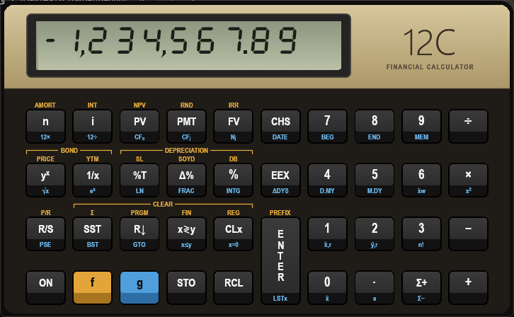

<title>Manual do Emulador HP-12C</title>
<meta name="claude:viewport-fit-sides" content="cover">
<link rel="preconnect" href="https://fonts.googleapis.com">
<link rel="preconnect" href="https://fonts.gstatic.com" crossorigin>
<link rel="stylesheet" href="https://fonts.googleapis.com/css2?family=Barlow+Condensed:wght@500;600;700&family=IBM+Plex+Mono:wght@400;500&family=IBM+Plex+Sans:wght@400;500;600&display=swap">
<style>
/* Layout: faixa metálica no topo como a da calculadora; conteúdo em coluna única de leitura,
   com o teclado e os exemplos como "objetos" da máquina (teclas pretas, LCD verde). */
:root {
  --bg: #eceef1;
  --surface: #ffffff;
  --ink: #1b1c1f;
  --muted: #5a5e66;
  --line: #d3d6db;
  --gold: #9a6f17;          /* legenda f, legível sobre claro */
  --blue: #1f69a8;          /* legenda g, legível sobre claro */
  --gold-key: #e3a53a;
  --blue-key: #4f9fdc;
  --panel: #1f1b17;         /* painel do teclado */
  --keycap: #2c2c2c;
  --keycap-light: #3c3c3c;
  --keyface: #111111;
  --key-text: #f4f4f4;
  --key-gold: #e2a93b;
  --key-blue: #6bb6ea;
  --metal-1: #dccda4;
  --metal-2: #a99566;
  --metal-ink: #2f281d;
  --lcd: #b9c0a6;
  --lcd-shade: #959c86;
  --lcd-ink: #1a1e16;
  --ok: #2e7d4f;
  --warn: #a2650c;
  --font-display: "Barlow Condensed", "Arial Narrow", "Roboto Condensed", sans-serif;
  --font-body: "IBM Plex Sans", "Segoe UI", system-ui, sans-serif;
  --font-mono: "IBM Plex Mono", Consolas, "Courier New", monospace;
}
@media (prefers-color-scheme: dark) {
  :root:not([data-theme="light"]) {
    --bg: #111214; --surface: #1a1b1e; --ink: #e8e6e1; --muted: #a2a5ab; --line: #2d2f34;
    --gold: #e2b04f; --blue: #74b9ea; --ok: #5fbf86; --warn: #e3a447;
    --metal-ink: #2f281d;
    color-scheme: dark;
  }
}
:root[data-theme="dark"] {
  --bg: #111214; --surface: #1a1b1e; --ink: #e8e6e1; --muted: #a2a5ab; --line: #2d2f34;
  --gold: #e2b04f; --blue: #74b9ea; --ok: #5fbf86; --warn: #e3a447;
  --metal-ink: #2f281d;
  color-scheme: dark;
}

* { box-sizing: border-box; }
body {
  background: var(--bg);
  color: var(--ink);
  font-family: var(--font-body);
  font-size: 16px;
  line-height: 1.6;
}
h1, h2, h3 { font-family: var(--font-display); line-height: 1.1; text-wrap: balance; margin: 0; }
h2 { font-size: 2.1rem; font-weight: 700; letter-spacing: 0.01em; }
h3 { font-size: 1.35rem; font-weight: 600; }
p { margin: 0; }
code, .mono { font-family: var(--font-mono); font-size: 0.92em; }
a { color: var(--blue); }
a:focus-visible, button:focus-visible { outline: 2px solid var(--blue-key); outline-offset: 2px; }

.wrap {
  max-width: 1040px;
  margin: 0 auto;
  padding-left: max(16px, env(safe-area-inset-left, 0px));
  padding-right: max(16px, env(safe-area-inset-right, 0px));
}

/* ---------- Faixa metálica (topo) ---------- */
.hero {
  background:
    repeating-linear-gradient(180deg, rgba(255,255,255,0.10) 0 1px, transparent 1px 3px),
    linear-gradient(180deg, var(--metal-1), var(--metal-2));
  color: var(--metal-ink);
  border-bottom: 4px solid var(--panel);
}
.hero .wrap {
  padding-block: 40px 36px;
  display: grid;
  grid-template-columns: minmax(0, 1fr) minmax(0, 1.15fr);
  gap: 36px;
  align-items: center;
}
.eyebrow {
  font-family: var(--font-display);
  text-transform: uppercase;
  letter-spacing: 0.14em;
  font-weight: 600;
  font-size: 0.9rem;
}
.hero h1 { font-size: clamp(2.6rem, 6vw, 4.2rem); font-weight: 700; margin: 6px 0 14px; }
.hero h1 span { font-weight: 500; }
.hero .lead { font-size: 1.1rem; max-width: 34ch; }
.hero img {
  width: 100%;
  border-radius: 14px;
  box-shadow: 0 18px 40px rgba(20, 15, 5, 0.35);
}
.facts { display: flex; flex-wrap: wrap; gap: 8px; margin-top: 20px; }
.fact {
  background: rgba(31, 27, 23, 0.88);
  color: #f2ead6;
  border-radius: 6px;
  padding: 4px 10px;
  font-size: 0.85rem;
}

/* ---------- Navegação ---------- */
nav.toc {
  position: sticky;
  top: env(safe-area-inset-top, 0px);
  z-index: 5;
  background: var(--panel);
  border-bottom: 1px solid #3a3229;
}
body::before {
  content: ""; position: fixed; inset: 0 0 auto; height: env(safe-area-inset-top, 0px);
  z-index: 10; background: var(--panel);
}
nav.toc .wrap { display: flex; gap: 4px; overflow-x: auto; padding-block: 8px; }
nav.toc a {
  color: #e9e1cf;
  text-decoration: none;
  font-family: var(--font-display);
  font-weight: 600;
  letter-spacing: 0.04em;
  white-space: nowrap;
  padding: 4px 12px;
  border-radius: 5px;
}
nav.toc a:hover { background: #3a3229; color: var(--key-gold); }

/* ---------- Seções ---------- */
main section { padding-block: 56px 8px; scroll-margin-top: 56px; }
.section-head { display: grid; gap: 10px; margin-bottom: 26px; max-width: 68ch; }
.section-head p { color: var(--muted); }
.card {
  background: var(--surface);
  border: 1px solid var(--line);
  border-radius: 12px;
  padding: 22px;
}
.grid-2 { display: grid; grid-template-columns: repeat(2, minmax(0, 1fr)); gap: 18px; }
.grid-3 { display: grid; grid-template-columns: repeat(3, minmax(0, 1fr)); gap: 18px; }
.steps { display: grid; gap: 14px; counter-reset: step; }
.steps li { list-style: none; display: grid; grid-template-columns: 32px minmax(0, 1fr); gap: 12px; align-items: start; }
.steps li::before {
  counter-increment: step; content: counter(step);
  width: 30px; height: 30px; border-radius: 50%;
  background: var(--panel); color: var(--key-gold);
  font-family: var(--font-display); font-weight: 700;
  display: grid; place-items: center;
}
ol.steps { padding: 0; margin: 0; }

/* ---------- Teclas (chips) ---------- */
.keys { display: flex; flex-wrap: wrap; gap: 6px; align-items: flex-end; }
.k {
  display: inline-grid;
  justify-items: center;
  min-width: 42px;
  padding: 5px 9px 4px;
  border-radius: 6px;
  background: linear-gradient(180deg, var(--keycap-light), var(--keycap));
  box-shadow: inset 0 -7px 0 var(--keyface), 0 2px 0 #000;
  color: var(--key-text);
  font-family: var(--font-display);
  font-weight: 600;
  font-size: 1.02rem;
  line-height: 1.1;
}
.k small { font-size: 0.66rem; color: #bdbdbd; font-weight: 500; padding-top: 1px; }
.k.fn-f { color: var(--key-gold); }
.k.fn-g { color: var(--key-blue); }
.k.f { background: var(--gold-key); color: #111; box-shadow: inset 0 -7px 0 #a8741f, 0 2px 0 #000; min-width: 34px; }
.k.g { background: var(--blue-key); color: #111; box-shadow: inset 0 -7px 0 #2d6ea5, 0 2px 0 #000; min-width: 34px; }
.num {
  font-family: var(--font-mono);
  font-weight: 500;
  padding: 3px 8px;
  border: 1px dashed var(--line);
  border-radius: 6px;
  color: var(--ink);
  background: var(--bg);
}

/* ---------- LCD ---------- */
.lcd {
  display: block;
  width: 100%;
  max-width: 340px;
  height: auto;
  border-radius: 8px;
  background: #262422;
  padding: 7px;
}

/* ---------- Teclado interativo ---------- */
.kb-scroll { overflow-x: auto; padding-bottom: 6px; }
.kb {
  min-width: 660px;
  background: var(--panel);
  border-radius: 14px;
  padding: 14px 14px 18px;
  display: grid;
  grid-template-columns: repeat(10, minmax(0, 1fr));
  grid-template-rows: repeat(4, auto);
  column-gap: 10px;
  row-gap: 6px;
}
.kb button {
  all: unset;
  cursor: pointer;
  display: grid;
  grid-template-rows: 18px 1fr;
  gap: 3px;
  text-align: center;
}
.kb .flabel {
  font-family: var(--font-display); font-weight: 600; font-size: 0.72rem;
  color: var(--key-gold); align-self: end; white-space: nowrap; overflow: hidden;
}
.kb .cap {
  display: grid;
  grid-template-rows: 1fr auto;
  border-radius: 6px;
  background: linear-gradient(180deg, var(--keycap-light), var(--keycap));
  box-shadow: 0 0 0 2px #000;
  min-height: 52px;
  overflow: hidden;
}
.kb .main {
  display: grid; place-items: center;
  font-family: var(--font-display); font-weight: 600; font-size: 1.05rem; color: var(--key-text);
}
.kb .glabel {
  background: var(--keyface);
  font-family: var(--font-display); font-weight: 600; font-size: 0.7rem;
  color: var(--key-blue); padding: 2px 0 3px; min-height: 18px; white-space: nowrap;
}
.kb .cap.gold { background: var(--gold-key); }
.kb .cap.gold .main { color: #111; }
.kb .cap.gold .glabel { background: #a8741f; }
.kb .cap.blue { background: var(--blue-key); }
.kb .cap.blue .main { color: #111; }
.kb .cap.blue .glabel { background: #2d6ea5; }
.kb .tall { grid-row: 3 / span 2; grid-column: 6; }
.kb .tall .cap { height: 100%; }
.kb .tall .main { writing-mode: vertical-rl; text-orientation: upright; letter-spacing: 0.05em; }
.kb button[aria-pressed="true"] .cap { box-shadow: 0 0 0 2px var(--key-gold), 0 0 14px rgba(226,169,59,0.55); }
.kb button:hover .cap { filter: brightness(1.18); }
.kb button:focus-visible .cap { box-shadow: 0 0 0 3px var(--blue-key); }

.detail { display: grid; grid-template-columns: auto minmax(0, 1fr); gap: 22px; align-items: start; margin-top: 18px; }
.detail .big { font-size: 1.6rem; min-width: 74px; padding: 10px 14px 8px; }
.fnlist { display: grid; gap: 12px; }
.fnrow { display: grid; grid-template-columns: 92px minmax(0, 1fr); gap: 12px; align-items: baseline; }
.fnrow .tag {
  font-family: var(--font-display); font-weight: 700; font-size: 1.05rem;
  border-left: 4px solid var(--line); padding-left: 8px;
}
.fnrow.main .tag { border-color: var(--ink); }
.fnrow.f .tag { border-color: var(--gold-key); color: var(--gold); }
.fnrow.g .tag { border-color: var(--blue-key); color: var(--blue); }
.fnrow .how { font-size: 0.8rem; color: var(--muted); display: block; }

/* ---------- Pilha RPN ---------- */
.stack-run { display: flex; flex-wrap: wrap; gap: 12px; }
.stack-step { display: grid; gap: 6px; justify-items: center; }
.stack {
  display: grid; gap: 3px;
  background: var(--surface); border: 1px solid var(--line); border-radius: 8px; padding: 6px;
  font-family: var(--font-mono); font-size: 0.85rem; min-width: 92px;
}
.stack div { display: grid; grid-template-columns: 16px 1fr; gap: 6px; padding: 1px 6px; border-radius: 4px; }
.stack div span:first-child { color: var(--muted); }
.stack div span:last-child { text-align: right; font-variant-numeric: tabular-nums; }
.stack .x { background: var(--panel); color: #f2ead6; }
.stack .x span:first-child { color: var(--key-gold); }

/* ---------- Exemplos ---------- */
.examples { display: grid; grid-template-columns: repeat(2, minmax(0, 1fr)); gap: 18px; }
.example { display: grid; gap: 12px; align-content: start; }
.example h3 { display: flex; gap: 10px; align-items: baseline; flex-wrap: wrap; }
.example h3 .area {
  font-family: var(--font-body); font-size: 0.72rem; font-weight: 600; text-transform: uppercase;
  letter-spacing: 0.1em; color: var(--muted);
}
.example p { color: var(--muted); font-size: 0.95rem; }
.example .then { font-size: 0.85rem; color: var(--muted); display: flex; gap: 8px; align-items: center; flex-wrap: wrap; }

/* ---------- Tabelas ---------- */
.table-scroll { overflow-x: auto; }
table { border-collapse: collapse; width: 100%; font-size: 0.95rem; }
th, td { text-align: left; padding: 9px 10px; border-bottom: 1px solid var(--line); vertical-align: top; }
th { font-family: var(--font-display); font-size: 1rem; letter-spacing: 0.03em; color: var(--muted); font-weight: 600; }
td:first-child { white-space: nowrap; }

.note {
  border-left: 4px solid var(--gold-key);
  background: var(--surface);
  padding: 14px 16px;
  border-radius: 0 10px 10px 0;
  font-size: 0.95rem;
}
.listing {
  font-family: var(--font-mono); font-size: 0.85rem; line-height: 1.5;
  background: var(--panel); color: #efe7d4; border-radius: 10px; padding: 14px 16px;
  overflow-x: auto; margin: 0; white-space: pre;
}
.listing .c { color: var(--key-gold); }
footer { padding-block: 48px 64px; color: var(--muted); font-size: 0.9rem; }

@media (max-width: 820px) {
  .hero .wrap, .grid-2, .grid-3, .examples { grid-template-columns: minmax(0, 1fr); }
  .detail { grid-template-columns: minmax(0, 1fr); }
  .fnrow { grid-template-columns: 76px minmax(0, 1fr); }
}
@media (prefers-reduced-motion: no-preference) {
  .kb .cap { transition: box-shadow 0.15s, filter 0.15s; }
}
</style>

<header class="hero">
  <div class="wrap">
    <div>
      <div class="eyebrow">Manual de utilização</div>
      <h1>HP-12C <span>no seu computador</span></h1>
      <p class="lead">Emulador fiel da calculadora financeira: mesmas teclas, mesma lógica RPN, mesmos resultados com 10 dígitos.</p>
      <div class="facts">
        <span class="fact">HP12C.exe portátil · ~5 MB</span>
        <span class="fact">Windows 10/11</span>
        <span class="fact">Memória contínua</span>
      </div>
    </div>
    
  </div>
</header>

<nav class="toc" aria-label="Seções">
  <div class="wrap">
    <a href="#comecar">Começar</a>
    <a href="#teclado">Teclado</a>
    <a href="#rpn">Pilha RPN</a>
    <a href="#exemplos">Exemplos</a>
    <a href="#display">Display</a>
    <a href="#programas">Programas</a>
    <a href="#memoria">Memória e testes</a>
    <a href="#limites">Limites</a>
  </div>
</nav>

<main class="wrap">

  <!-- ======================= COMEÇAR ======================= -->
  <section id="comecar">
    <div class="section-head">
      <div class="eyebrow" style="color:var(--gold)">1 · Começar</div>
      <h2>Abrir e usar</h2>
      <p>Não há instalação. Descompacte a pasta onde quiser: a memória, as preferências e este manual ficam todos nela.</p>
    </div>
    <div class="grid-2">
      <div class="card">
        <h3>Primeiros passos</h3>
        <ol class="steps" style="margin-top:14px">
          <li><span>Abra <code>HP12C.exe</code> (no projeto: <code>dist\HP12C-0.1.1\HP12C.exe</code>). Este manual vem dentro do programa: pressione <span class="num">F1</span> a qualquer momento.</span></li>
          <li><span>Clique nas teclas com o mouse. A tecla afunda enquanto está pressionada.</span></li>
          <li><span>Para mover a janela, clique fora das teclas (na faixa dourada ou na borda) e arraste.</span></li>
          <li><span>Botão direito abre o menu: zoom, sempre no topo, copiar X, programas, testes, manual e sair.</span></li>
          <li><span><span class="num">F2</span> abre a janela <strong>Registradores</strong>, ao lado da calculadora: pilha (T, Z, Y, X, LSTx), n, i, PV, PMT, FV, os registradores R0–R.9, fluxos de caixa e o programa com a linha atual, atualizados a cada tecla.</span></li>
        </ol>
      </div>
      <div class="card">
        <h3>Teclado do computador</h3>
        <div class="table-scroll" style="margin-top:10px">
          <table>
            <tr><th>Tecla do PC</th><th>Na HP-12C</th></tr>
            <tr><td><span class="num">0–9</span> <span class="num">.</span> <span class="num">,</span></td><td>Dígitos e ponto decimal</td></tr>
            <tr><td><span class="num">+ - * /</span></td><td><div class="keys" data-keys="+ - * /"></div></td></tr>
            <tr><td><span class="num">Enter</span></td><td><div class="keys" data-keys="ENTER"></div></td></tr>
            <tr><td><span class="num">Backspace</span> <span class="num">Delete</span></td><td><div class="keys" data-keys="CLx"></div></td></tr>
            <tr><td><span class="num">F</span> <span class="num">G</span></td><td><div class="keys" data-keys="f g"></div></td></tr>
            <tr><td><span class="num">S</span> <span class="num">R</span></td><td><div class="keys" data-keys="STO RCL"></div></td></tr>
            <tr><td><span class="num">N I P M V</span></td><td><div class="keys" data-keys="n i PV PMT FV"></div></td></tr>
            <tr><td><span class="num">E</span> <span class="num">C</span></td><td><div class="keys" data-keys="EEX CHS"></div></td></tr>
            <tr><td><span class="num">Tab</span> <span class="num">D</span></td><td><div class="keys" data-keys="x<>y Rv"></div></td></tr>
            <tr><td><span class="num">Esc</span></td><td>Cancela f, g, STO ou RCL pendente</td></tr>
            <tr><td><span class="num">Ctrl+C</span> <span class="num">Ctrl+V</span></td><td>Copia X · cola número (ou programa) em X</td></tr>
            <tr><td><span class="num">F1</span></td><td>Abre este manual no navegador</td></tr>
            <tr><td><span class="num">F2</span></td><td>Mostra ou esconde a janela de registradores</td></tr>
            <tr><td><span class="num">F3</span></td><td>Mostra ou esconde o editor de programa</td></tr>
          </table>
        </div>
      </div>
    </div>
  </section>

  <!-- ======================= TECLADO ======================= -->
  <section id="teclado">
    <div class="section-head">
      <div class="eyebrow" style="color:var(--gold)">2 · Teclado</div>
      <h2>Cada tecla faz três coisas</h2>
      <p>A função branca é a direta. A dourada, impressa acima da tecla, vem depois de <span class="k f">f</span>. A azul, na face de baixo da tecla, vem depois de <span class="k g">g</span>. Clique numa tecla para ver o que ela faz.</p>
    </div>
    <div class="kb-scroll">
      <div class="kb" id="kb" role="group" aria-label="Teclado da HP-12C"></div>
    </div>
    <div class="card detail" id="detail" aria-live="polite"></div>
  </section>

  <!-- ======================= RPN ======================= -->
  <section id="rpn">
    <div class="section-head">
      <div class="eyebrow" style="color:var(--gold)">3 · Pilha RPN</div>
      <h2>Primeiro os números, depois a operação</h2>
      <p>A HP-12C não tem tecla de igual. Você digita um número, pressiona <span class="k">ENTER</span>, digita o outro e só então a operação. Os números ficam numa pilha de quatro andares: X (o que aparece no display), Y, Z e T.</p>
    </div>
    <div class="card" style="display:grid;gap:16px">
      <h3>Exemplo: (3 + 4) × 2</h3>
      <div class="stack-run" id="stackrun"></div>
      <p style="color:var(--muted)">Depois de uma operação, o próximo número digitado empurra o resultado para Y. Por isso <code>3 ENTER 4 + 2 ×</code> funciona sem parênteses.</p>
    </div>
    <div class="grid-3" style="margin-top:18px">
      <div class="card"><h3>Trocar e girar</h3><p style="margin-top:8px"><span class="k">x≷y</span> troca X e Y. <span class="k">R↓</span> gira a pilha para baixo, para ver Y, Z e T.</p></div>
      <div class="card"><h3>Desfazer a última</h3><p style="margin-top:8px"><span class="k g">g</span> <span class="k fn-g">LSTx<small>ENTER</small></span> traz de volta o X que havia antes da última operação.</p></div>
      <div class="card"><h3>Guardar valores</h3><p style="margin-top:8px"><span class="k">STO</span> <span class="num">1</span> guarda X no registrador 1; <span class="k">RCL</span> <span class="num">1</span> traz de volta. Há 20 registradores: 0–9 e .0–.9.</p></div>
    </div>
  </section>

  <!-- ======================= EXEMPLOS ======================= -->
  <section id="exemplos">
    <div class="section-head">
      <div class="eyebrow" style="color:var(--gold)">4 · Exemplos</div>
      <h2>Passo a passo</h2>
      <p>Pressione as teclas na ordem mostrada. Números com borda tracejada são digitados normalmente. O display mostra o resultado em 2 casas decimais (padrão).</p>
    </div>
    <div class="note" style="margin-bottom:18px">Antes de um cálculo financeiro novo, limpe os registradores com <span class="k f">f</span> <span class="k fn-f">CLEAR FIN<small>x≷y</small></span>, para não aproveitar valores de uma conta anterior.</div>
    <div class="examples">

      <article class="card example">
        <h3>Porcentagem <span class="area">Básico</span></h3>
        <p>Preço de 200 com 15% de acréscimo. O % calcula 30 e mantém 200 na pilha; o + soma os dois.</p>
        <div class="keys" data-keys="200 ENTER 15 % +"></div>
        <svg class="lcd" data-lcd="230.00" role="img" aria-label="Display: 230,00"></svg>
      </article>

      <article class="card example">
        <h3>Variação percentual <span class="area">Básico</span></h3>
        <p>De 100 para 125, quanto subiu?</p>
        <div class="keys" data-keys="100 ENTER 125 D%"></div>
        <svg class="lcd" data-lcd="25.00" role="img" aria-label="Display: 25,00"></svg>
      </article>

      <article class="card example">
        <h3>Financiamento <span class="area">Juros compostos</span></h3>
        <p>Carro de 5.750 em 3 anos, 10,5% ao ano, pagamentos mensais. Qual a prestação? O valor negativo indica dinheiro saindo.</p>
        <div class="keys" data-keys="3 g n|12× 10.5 g i|12÷ 5750 PV PMT"></div>
        <svg class="lcd" data-lcd="-186.89" role="img" aria-label="Display: menos 186,89"></svg>
      </article>

      <article class="card example">
        <h3>Investimento <span class="area">Juros compostos</span></h3>
        <p>Aplicar 1.000 por 10 anos a 5% ao ano. Quanto terá no fim?</p>
        <div class="keys" data-keys="10 n 5 i 1000 CHS PV FV"></div>
        <svg class="lcd" data-lcd="1,628.89" role="img" aria-label="Display: 1.628,89"></svg>
      </article>

      <article class="card example">
        <h3>Amortização <span class="area">Empréstimo</span></h3>
        <p>Hipoteca de 50.000 em 25 anos a 13,25% ao ano, prestação de 573,35. Quanto foi de juros no primeiro ano?</p>
        <div class="keys" data-keys="25 g n|12× 13.25 g i|12÷ 50000 PV 573.35 CHS PMT 12 f n|AMORT"></div>
        <svg class="lcd" data-lcd="-6,608.89" role="img" aria-label="Display: menos 6.608,89"></svg>
        <div class="then">Depois <span class="keys" data-keys="x<>y"></span> mostra o principal amortizado: <strong class="mono">-271.31</strong>. <span class="keys" data-keys="RCL PV"></span> mostra o saldo devedor: <strong class="mono">49,728.69</strong>.</div>
      </article>

      <article class="card example">
        <h3>Valor presente líquido <span class="area">Fluxo de caixa</span></h3>
        <p>Investe 50.000 e recebe 15.000, depois 20.000 por 2 anos e 10.000. Vale a pena a 10% ao ano?</p>
        <div class="keys" data-keys="50000 CHS g PV|CFo 15000 g PMT|CFj 20000 g PMT|CFj 2 g FV|Nj 10000 g PMT|CFj 10 i f PV|NPV"></div>
        <svg class="lcd" data-lcd="2,021.72" role="img" aria-label="Display: 2.021,72"></svg>
        <div class="then">Em seguida <span class="keys" data-keys="f FV|IRR"></span> dá a taxa interna de retorno: <strong class="mono">11.93</strong> %.</div>
      </article>

      <article class="card example">
        <h3>Data futura <span class="area">Calendário</span></h3>
        <p>Formato dia.mês, 14/05/2004 mais 120 dias. O último dígito é o dia da semana (6 = sábado).</p>
        <div class="keys" data-keys="g 4|D.MY 14.052004 ENTER 120 g CHS|DATE"></div>
        <svg class="lcd" data-lcd="11.092004 6" data-ann="dmy" role="img" aria-label="Display: 11.092004, dia 6, indicador D.MY"></svg>
      </article>

      <article class="card example">
        <h3>Dias entre datas <span class="area">Calendário</span></h3>
        <p>De 03/06/2004 a 14/10/2005 (formato D.MY ligado).</p>
        <div class="keys" data-keys="3.062004 ENTER 14.102005 g EEX|ΔDYS"></div>
        <svg class="lcd" data-lcd="498.00" data-ann="dmy" role="img" aria-label="Display: 498,00 dias corridos"></svg>
        <div class="then"><span class="keys" data-keys="x<>y"></span> mostra os dias na base comercial 30/360: <strong class="mono">491.00</strong>.</div>
      </article>

      <article class="card example">
        <h3>Média e desvio <span class="area">Estatística</span></h3>
        <p>Lance 2, 4 e 9 com Σ+ (o display conta quantos já entraram) e peça a média.</p>
        <div class="keys" data-keys="2 S+ 4 S+ 9 S+ g 0|x̄"></div>
        <svg class="lcd" data-lcd="5.00" role="img" aria-label="Display: 5,00"></svg>
        <div class="then"><span class="keys" data-keys="g .|s"></span> dá o desvio padrão: <strong class="mono">3.61</strong>.</div>
      </article>

      <article class="card example">
        <h3>Raiz quadrada <span class="area">Matemática</span></h3>
        <p>As funções azuis cobrem √x, eˣ, LN, x², n!, parte inteira e fracionária.</p>
        <div class="keys" data-keys="2 g y^x|√x"></div>
        <svg class="lcd" data-lcd="1.41" role="img" aria-label="Display: 1,41"></svg>
      </article>

    </div>
  </section>

  <!-- ======================= DISPLAY ======================= -->
  <section id="display">
    <div class="section-head">
      <div class="eyebrow" style="color:var(--gold)">5 · Display</div>
      <h2>O que aparece no visor</h2>
      <p>A calculadora guarda sempre 10 dígitos, mesmo mostrando só 2 casas. O formato muda só a exibição.</p>
    </div>
    <div class="grid-2">
      <div class="card" style="display:grid;gap:14px">
        <h3>Formatos</h3>
        <div class="fnrow"><span class="keys" data-keys="f 4"></span><span>Casas decimais fixas (0 a 9). Ex.: 2 ÷ 3 com <code>f 4</code>:</span></div>
        <svg class="lcd" data-lcd="0.6667" role="img" aria-label="Display: 0,6667"></svg>
        <div class="fnrow"><span class="keys" data-keys="f ."></span><span>Notação científica: mantissa e expoente.</span></div>
        <svg class="lcd" data-lcd="6.666667-01" role="img" aria-label="Display: 6,666667 vezes 10 elevado a menos 1"></svg>
        <div class="fnrow"><span class="keys" data-keys="f ENTER|PREFIX"></span><span>Segure para ver os 10 dígitos guardados.</span></div>
        <p style="color:var(--muted);font-size:0.9rem">Para trocar ponto por vírgula decimal, use o menu <em>Ligar segurando… → ON + .</em></p>
      </div>
      <div class="card" style="display:grid;gap:14px">
        <h3>Indicadores</h3>
        <svg class="lcd" data-lcd="" data-ann="f g begin dmy compound prgm" role="img" aria-label="Todos os indicadores acesos"></svg>
        <div class="table-scroll"><table>
          <tr><td><strong>f</strong> · <strong>g</strong></td><td>Prefixo pressionado, esperando a próxima tecla.</td></tr>
          <tr><td><strong>BEGIN</strong></td><td>Pagamentos no início do período (<code>g 7</code>; <code>g 8</code> desliga).</td></tr>
          <tr><td><strong>D.MY</strong></td><td>Datas como dia.mês (<code>g 4</code>; <code>g 5</code> volta a mês.dia).</td></tr>
          <tr><td><strong>C</strong></td><td>Período fracionário com juros compostos (<code>STO EEX</code>).</td></tr>
          <tr><td><strong>PRGM</strong></td><td>Modo de programação.</td></tr>
        </table></div>
      </div>
    </div>
    <div class="card" style="margin-top:18px">
      <h3>Mensagens de erro</h3>
      <p style="color:var(--muted);margin-top:4px">Qualquer tecla apaga a mensagem; os números continuam onde estavam.</p>
      <div class="table-scroll" style="margin-top:10px"><table>
        <tr><th>Mensagem</th><th>Causa comum</th></tr>
        <tr><td class="mono">Error 0</td><td>Conta impossível: divisão por zero, raiz de negativo, LN de zero.</td></tr>
        <tr><td class="mono">Error 1</td><td>Um registrador passou de 9,999999999 × 10⁹⁹.</td></tr>
        <tr><td class="mono">Error 2</td><td>Estatística sem dados suficientes (ex.: desvio com um só valor).</td></tr>
        <tr><td class="mono">Error 3</td><td>IRR não encontrou resposta.</td></tr>
        <tr><td class="mono">Error 4</td><td>Memória de programa cheia, ou GTO para linha que não existe.</td></tr>
        <tr><td class="mono">Error 5</td><td>Juros compostos sem solução (ex.: PV, PMT e FV com o mesmo sinal).</td></tr>
        <tr><td class="mono">Error 6</td><td>Registrador ocupado pelo programa, ou Nj fora de 1–99.</td></tr>
        <tr><td class="mono">Error 7</td><td>IRR com fluxos todos do mesmo sinal.</td></tr>
        <tr><td class="mono">Error 8</td><td>Data inválida ou fora de 15/10/1582 a 25/11/4046.</td></tr>
        <tr><td class="mono">Error 9</td><td>Teste de teclado com tecla fora da ordem.</td></tr>
        <tr><td class="mono">Pr Error</td><td>A memória foi apagada (ON + −) ou o arquivo salvo estava danificado.</td></tr>
      </table></div>
    </div>
  </section>

  <!-- ======================= PROGRAMAS ======================= -->
  <section id="programas">
    <div class="section-head">
      <div class="eyebrow" style="color:var(--gold)">6 · Programas</div>
      <h2>Gravar uma sequência de teclas</h2>
      <p>Um programa guarda teclas para repetir uma conta. Até 99 linhas; a partir da 9ª, cada 7 linhas usam um registrador (do R.9 para baixo).</p>
    </div>
    <div class="grid-2">
      <div class="card" style="display:grid;gap:14px">
        <h3>Como gravar e rodar</h3>
        <ol class="steps">
          <li><span><span class="keys" data-keys="f R/S|P/R"></span> entra no modo de programação (acende PRGM).</span></li>
          <li><span>Digite as teclas. Cada uma vira uma linha, mostrada como número + códigos.</span></li>
          <li><span><span class="keys" data-keys="f R/S|P/R"></span> de novo volta ao modo normal.</span></li>
          <li><span>Digite os dados e pressione <span class="k">R/S</span> para rodar.</span></li>
        </ol>
        <svg class="lcd" data-lcd="01-44 40 1" data-ann="prgm" role="img" aria-label="Linha de programa 01 com códigos 44 40 1 (STO + 1)"></svg>
        <p style="color:var(--muted);font-size:0.9rem">Códigos = linha e coluna da tecla: 44 é STO (linha 4, coluna 4), 40 é + e 1 é o dígito 1.</p>
      </div>
      <div class="card" style="display:grid;gap:12px">
        <h3>Teclas de programação</h3>
        <div class="table-scroll"><table>
          <tr><td><span class="keys" data-keys="SST"></span></td><td>Avança uma linha (fora do modo de programação, executa uma linha).</td></tr>
          <tr><td><span class="keys" data-keys="g SST|BST"></span></td><td>Volta uma linha.</td></tr>
          <tr><td><span class="keys" data-keys="g Rv|GTO"></span> <span class="num">.</span> <span class="num">nn</span></td><td>Vai para a linha nn sem gravar nada.</td></tr>
          <tr><td><span class="keys" data-keys="g Rv|GTO"></span> <span class="num">nn</span></td><td>Dentro do programa: desvia para a linha nn.</td></tr>
          <tr><td><span class="keys" data-keys="g x<>y|x≤y g CLx|x=0"></span></td><td>Testes: se for verdade executa a linha seguinte; se não, pula.</td></tr>
          <tr><td><span class="keys" data-keys="g R/S|PSE"></span></td><td>Pausa de 1 segundo mostrando X.</td></tr>
          <tr><td><span class="keys" data-keys="f Rv|PRGM"></span></td><td>CLEAR PRGM: no modo de programação, apaga tudo.</td></tr>
          <tr><td><span class="keys" data-keys="g 9|MEM"></span></td><td>Mostra a memória, ex.: <code>P-08 r-20</code> (linhas e registradores livres).</td></tr>
        </table></div>
      </div>
    </div>
    <div class="card" style="margin-top:18px;display:grid;gap:12px">
      <h3>Editor de programa (F3)</h3>
      <p>Em vez de digitar linha por linha na calculadora, abra o editor com <span class="num">F3</span> (ou botão direito → <em>Programa: ver e editar</em>). Cada linha aparece com os códigos e a instrução por extenso:</p>
      <pre class="listing">  04  45 0      RCL 0
▶ 05  44 40 1   STO + 1      <span class="c">← próxima linha a executar</span>
  09  43 35     x=0
  10  43,33 12  GTO 12</pre>
      <div class="grid-2">
        <ul style="margin:0;padding-left:20px;display:grid;gap:6px">
          <li>Clique numa linha, digite a nova instrução (ex.: <code>STO + 1</code>, <code>g 0</code>, <code>f n</code>, <code>g GTO 05</code>) e escolha <strong>Substituir linha</strong> ou <strong>Inserir depois</strong>.</li>
          <li><strong>Apagar linha</strong>, <strong>↑</strong> e <strong>↓</strong> reorganizam o programa.</li>
          <li><strong>Ir para esta linha</strong> faz o próximo R/S começar ali.</li>
        </ul>
        <ul style="margin:0;padding-left:20px;display:grid;gap:6px">
          <li>Ao inserir, apagar ou mover, os <code>GTO</code> são corrigidos sozinhos. Marque a opção indicada para manter o comportamento da 12C real.</li>
          <li><strong>Editar como texto</strong> abre o programa inteiro num editor; ao aplicar, tudo é validado e um erro não altera o programa.</li>
          <li>Se o programa crescer a ponto de ocupar um registrador com valor guardado, o editor avisa e pede confirmação.</li>
        </ul>
      </div>
    </div>
    <div class="card" style="margin-top:18px;display:grid;gap:14px">
      <h3>Exemplo: soma de 1 até N</h3>
      <p style="color:var(--muted)">Copie o texto abaixo, clique na calculadora e pressione <span class="num">Ctrl+V</span>: o programa é carregado. Depois digite <span class="num">10</span> e pressione <span class="k">R/S</span>.</p>
      <div class="grid-2">
        <pre class="listing" id="prog"><span class="c"># HP-12C programa</span>
01 STO 0        <span class="c">guarda N</span>
02 0
03 STO 1        <span class="c">soma = 0</span>
04 RCL 0
05 STO + 1      <span class="c">soma += contador</span>
06 1
07 STO - 0      <span class="c">contador -= 1</span>
08 RCL 0
09 g CLx        <span class="c">x = 0 ?</span>
10 g GTO 12
11 g GTO 04
12 RCL 1        <span class="c">mostra a soma</span></pre>
        <div style="display:grid;gap:12px;align-content:start">
          <button type="button" id="copyprog" class="k" style="justify-self:start;cursor:pointer;border:0;font-size:1rem;padding:8px 14px 10px">Copiar programa</button>
          <span id="copied" style="color:var(--ok);font-size:0.9rem" hidden>Copiado. Cole na calculadora com Ctrl+V.</span>
          <div class="keys" data-keys="10 R/S"></div>
          <svg class="lcd" data-lcd="55.00" role="img" aria-label="Display: 55,00"></svg>
          <p style="color:var(--muted);font-size:0.9rem">Os comentários à direita são só explicação; ao copiar pelo botão eles ficam de fora. O menu <em>Copiar programa</em> do emulador gera a mesma listagem.</p>
        </div>
      </div>
    </div>
  </section>

  <!-- ======================= MEMÓRIA ======================= -->
  <section id="memoria">
    <div class="section-head">
      <div class="eyebrow" style="color:var(--gold)">7 · Memória e testes</div>
      <h2>Nada se perde ao fechar</h2>
      <p>Como a calculadora real, o emulador guarda tudo sozinho: pilha, registradores, valores financeiros, programa e modos. Ao abrir de novo, está tudo onde você deixou. Zoom, posição da janela e "sempre no topo" também são lembrados.</p>
    </div>
    <div class="grid-2">
      <div class="card">
        <h3>Onde fica</h3>
        <p style="margin-top:8px">Na <strong>mesma pasta do HP12C.exe</strong>: <code>state.json</code> (estado), <code>settings.json</code> (janela) e a pasta <code>manual</code>. Leve a pasta inteira para outro computador ou pendrive e a calculadora vai junto. Se a pasta não aceitar gravação (por exemplo, em Arquivos de Programas), os arquivos vão para <code>%APPDATA%\HP12C</code>. Se o arquivo estiver danificado, a calculadora começa zerada mostrando <code>Pr Error</code> e guarda o arquivo antigo como <code>state.json.bad</code>.</p>
      </div>
      <div class="card">
        <h3>Ligar segurando uma tecla</h3>
        <p style="margin-top:8px;color:var(--muted)">No menu do botão direito: <em>Ligar segurando…</em></p>
        <div class="table-scroll" style="margin-top:8px"><table>
          <tr><td><span class="keys" data-keys="ON *"></span></td><td>Autoteste: acende todos os segmentos.</td></tr>
          <tr><td><span class="keys" data-keys="ON /"></span></td><td>Teste de teclado: pressione todas as teclas da esquerda para a direita, de cima para baixo (ENTER nas linhas 3 e 4). Termina com <code>12</code>.</td></tr>
          <tr><td><span class="keys" data-keys="ON ."></span></td><td>Troca ponto/vírgula decimal.</td></tr>
          <tr><td><span class="keys" data-keys="ON -"></span></td><td>Apaga toda a memória (mostra <code>Pr Error</code>).</td></tr>
        </table></div>
      </div>
    </div>
  </section>

  <!-- ======================= LIMITES ======================= -->
  <section id="limites">
    <div class="section-head">
      <div class="eyebrow" style="color:var(--gold)">8 · Limites conhecidos</div>
      <h2>Onde difere da máquina</h2>
    </div>
    <div class="card">
      <ul style="margin:0;padding-left:20px;display:grid;gap:8px">
        <li>Ainda não é possível dar um palpite para o IRR (<code>RCL g R/S</code> depois de <code>Error 3</code>).</li>
        <li>Os cálculos de i e IRR são instantâneos, então o indicador <code>running</code> não pisca durante eles (nos programas, sim).</li>
        <li>Programas rodam bem mais rápido que na calculadora real.</li>
        <li>Alguns detalhes ainda não foram comparados com uma HP-12C física: títulos (PRICE/YTM), arredondamento de n e o que sobra em Z e T depois de algumas funções. O resultado principal segue o manual da HP.</li>
        <li>Emula a HP-12C original (RPN). O modo algébrico da 12C Platinum não existe aqui.</li>
      </ul>
    </div>
  </section>
</main>

<footer class="wrap">
  Emulador HP-12C · versão 0.1.1 · Projeto independente, sem vínculo com a HP. "HP" e "12C" são marcas da HP Inc.
</footer>

<script>
// ---------- Teclas desenhadas a partir de "data-keys" ----------
// "f"/"g" = prefixos; "n|12×" = tecla n usada pela função 12×; números = digitados.
const LABEL = { "*": "×", "/": "÷", "-": "−", "x<>y": "x≷y", "S+": "Σ+", "Rv": "R↓", "D%": "Δ%", "y^x": "yˣ", ".": "·" };
function renderKeys(el) {
  let prefix = null;
  const out = [];
  for (const tok of el.dataset.keys.trim().split(/\s+/)) {
    if (tok === "f" || tok === "g") {
      out.push(`<span class="k ${tok}">${tok}</span>`);
      prefix = tok;
      continue;
    }
    if (/^\d+(\.\d+)?$/.test(tok) && tok.length > 1 || /^\d\.\d+/.test(tok)) {
      out.push(`<span class="num">${tok}</span>`);
      prefix = null;
      continue;
    }
    const [phys, fn] = tok.split("|");
    const physLabel = LABEL[phys] ?? phys;
    if (fn) {
      out.push(`<span class="k ${prefix ? "fn-" + prefix : ""}">${fn}<small>${physLabel}</small></span>`);
    } else if (/^\d$/.test(phys) && prefix) {
      out.push(`<span class="k fn-${prefix}">${physLabel}</span>`);
    } else {
      out.push(`<span class="k">${physLabel}</span>`);
    }
    prefix = null;
  }
  el.innerHTML = out.join("");
}
document.querySelectorAll("[data-keys]").forEach(renderKeys);

// ---------- LCD de 7 segmentos (mesma geometria do emulador) ----------
const A = 1, B = 2, C = 4, D = 8, E = 16, F = 32, G = 64;
const SEG = {
  "0": A|B|C|D|E|F, "1": B|C, "2": A|B|G|E|D, "3": A|B|G|C|D, "4": F|G|B|C, "5": A|F|G|C|D,
  "6": A|F|G|E|D|C, "7": A|B|C, "8": A|B|C|D|E|F|G, "9": A|B|C|D|F|G, "-": G,
  "E": A|D|E|F|G, "r": E|G, "o": C|D|E|G, "P": A|B|E|F|G, "n": C|E|G, "u": C|D|E, "i": E, "g": A|B|C|D|F|G,
};
function segPolys(w, h, t, slant) {
  const half = t / 2, gap = t * 0.14, left = half, right = w - half, top = half, mid = h / 2, bottom = h - half;
  const hz = y => { const x0 = left + gap, x1 = right - gap; return [[x0,y],[x0+half,y-half],[x1-half,y-half],[x1,y],[x1-half,y+half],[x0+half,y+half]]; };
  const vt = (x, y0, y1) => { y0 += gap; y1 -= gap; return [[x,y0],[x+half,y0+half],[x+half,y1-half],[x,y1],[x-half,y1-half],[x-half,y0+half]]; };
  return [hz(top), vt(right, top, mid), vt(right, mid, bottom), hz(bottom), vt(left, mid, bottom), vt(left, top, mid), hz(mid)]
    .map(p => p.map(([x, y]) => [x + slant * (h - y), y]));
}
const LCD = { w: 76, h: 12, minusX: 1.6, firstX: 6.2, pitch: 6.75, top: 1.4, dw: 4.1, dh: 6.6, t: 0.78, slant: 0.09, annY: 10.05 };
const ANN = [["low", "*", 2.6], ["f", "f", 15.0], ["g", "g", 21.6], ["begin", "BEGIN", 32.5], ["dmy", "D.MY", 43.2], ["compound", "C", 52.4], ["prgm", "PRGM", 66.2]];
function renderLcd(svg) {
  let text = svg.dataset.lcd;
  const minus = text.startsWith("-");
  if (minus) text = text.slice(1);
  const cells = [];
  for (const ch of text) {
    if ((ch === "." || ch === ",") && cells.length) cells[cells.length - 1].p = ch;
    else cells.push({ g: ch, p: null });
  }
  const polys = segPolys(LCD.dw, LCD.dh, LCD.t, LCD.slant);
  const ink = "var(--lcd-ink)";
  const parts = [`<rect x="0" y="0" width="${LCD.w}" height="${LCD.h}" rx="0.8" fill="var(--lcd)"/>`,
                 `<rect x="0" y="0" width="${LCD.w}" height="0.7" fill="var(--lcd-shade)"/>`];
  const draw = (ox, lit, ps) => ps.forEach((p, i) => {
    if (lit & (1 << i)) parts.push(`<polygon fill="${ink}" points="${p.map(([x, y]) => `${(ox + x).toFixed(2)},${(LCD.top + y).toFixed(2)}`).join(" ")}"/>`);
  });
  if (minus) draw(LCD.minusX, G, segPolys(LCD.dw * 0.8, LCD.dh, LCD.t, LCD.slant));
  cells.slice(0, 10).forEach((c, i) => {
    const ox = LCD.firstX + i * LCD.pitch;
    draw(ox, SEG[c.g] ?? 0, polys);
    if (c.p) {
      const t = LCD.t * 1.05, x = ox + LCD.dw + (LCD.pitch - LCD.dw) / 2 - t / 2, y = LCD.top + LCD.dh - t;
      parts.push(`<rect x="${x.toFixed(2)}" y="${y.toFixed(2)}" width="${t}" height="${t}" fill="${ink}"/>`);
      if (c.p === ",") parts.push(`<polygon fill="${ink}" points="${x + t * 0.15},${y + t} ${x + t},${y + t} ${x - t * 0.45},${y + t * 2.3}"/>`);
    }
  });
  const on = new Set((svg.dataset.ann || "").split(/\s+/));
  ANN.forEach(([key, label, x]) => {
    if (on.has(key)) parts.push(`<text x="${x}" y="${LCD.annY}" font-size="1.55" text-anchor="middle" dominant-baseline="middle" font-family="Barlow Condensed, Arial Narrow, sans-serif" font-weight="600" fill="${ink}">${label}</text>`);
  });
  svg.setAttribute("viewBox", `0 0 ${LCD.w} ${LCD.h}`);
  svg.innerHTML = parts.join("");
}
document.querySelectorAll("svg[data-lcd]").forEach(renderLcd);

// ---------- Pilha RPN: (3 + 4) × 2 ----------
const RUN = [
  ["3", ["", "", "", "3"]], ["ENTER", ["", "", "3", "3"]], ["4", ["", "", "3", "4"]],
  ["+", ["", "", "", "7"]], ["2", ["", "", "7", "2"]], ["*", ["", "", "", "14"]],
];
document.getElementById("stackrun").innerHTML = RUN.map(([key, [t, z, y, x]]) => `
  <div class="stack-step">
    <div class="keys" data-keys="${key}"></div>
    <div class="stack">
      <div><span>T</span><span>${t}</span></div><div><span>Z</span><span>${z}</span></div>
      <div><span>Y</span><span>${y}</span></div><div class="x"><span>X</span><span>${x}</span></div>
    </div>
  </div>`).join("");
document.querySelectorAll("#stackrun [data-keys]").forEach(renderKeys);

// ---------- Teclado interativo ----------
// [principal, f, g, o que faz (principal), o que faz (f), o que faz (g), estilo]
const DIG = "Dígito.", FIX = "Fixa o número de casas decimais do display (FIX).";
const KEYS = [
  ["n","AMORT","12×","Número de períodos. Com um valor digitado, guarda; logo após outra tecla financeira, calcula.","Amortiza X pagamentos: juros em X, principal em Y; atualiza PV e n.","Multiplica X por 12 e guarda em n (anos → meses)."],
  ["i","INT","12÷","Taxa de juros por período, em %.","Juros simples: n = dias, i = taxa anual, PV = principal. Juros base 360 em X, base 365 em Z.","Divide X por 12 e guarda em i (taxa anual → mensal)."],
  ["PV","NPV","CFo","Valor presente.","Valor presente líquido dos fluxos à taxa i (também vai para PV).","Guarda X como fluxo inicial e zera o contador de fluxos."],
  ["PMT","RND","CFj","Pagamento por período.","Arredonda X para as casas mostradas no display.","Guarda X como o próximo fluxo de caixa."],
  ["FV","IRR","Nj","Valor futuro.","Taxa interna de retorno dos fluxos (resultado em X e em i).","Quantas vezes seguidas o último fluxo se repete (1 a 99)."],
  ["CHS","","DATE","Troca o sinal de X (ou do expoente, depois de EEX).","","Data em Y mais os dias em X: nova data com o dia da semana (1 = seg … 7 = dom)."],
  ["7","","BEG",DIG,FIX,"Pagamentos no início do período (acende BEGIN)."],
  ["8","","END",DIG,FIX,"Pagamentos no fim do período (padrão)."],
  ["9","","MEM",DIG,FIX,"Mostra linhas de programa (P) e registradores livres (r)."],
  ["÷","","","Divide Y por X.","",""],
  ["yˣ","PRICE","√x","Y elevado a X.","Preço de título: Y = liquidação, X = vencimento, i = rendimento, PMT = cupom anual. Preço em X, juros acumulados em Y.","Raiz quadrada de X."],
  ["1/x","YTM","eˣ","Inverso de X.","Rendimento do título, com o preço em PV.","e elevado a X."],
  ["%T","SL","LN","Quanto X representa de Y, em %.","Depreciação linear do ano em X (PV = custo, FV = residual, n = vida útil). Valor restante em Y.","Logaritmo natural de X."],
  ["Δ%","SOYD","FRAC","Variação percentual de Y para X.","Depreciação pela soma dos dígitos dos anos.","Parte fracionária de X."],
  ["%","DB","INTG","X% de Y; Y continua na pilha (200 ENTER 15 % + = 230).","Depreciação por saldo decrescente (fator em i, ex.: 200 = dobro).","Parte inteira de X."],
  ["EEX","","ΔDYS","Digita o expoente de 10 (1.5 EEX 3 = 1.500).","","Dias da data em Y até a data em X: corridos em X, base 30/360 em Y."],
  ["4","","D.MY",DIG,FIX,"Datas como dia.mêsano (acende D.MY)."],
  ["5","","M.DY",DIG,FIX,"Datas como mês.diaano (padrão)."],
  ["6","","x̄w",DIG,FIX,"Média ponderada (lance valor ENTER peso Σ+)."],
  ["×","","x²","Multiplica Y por X.","","Quadrado de X."],
  ["R/S","P/R","PSE","Inicia ou para um programa.","Entra e sai do modo de programação.","Num programa: pausa de 1 segundo mostrando X."],
  ["SST","Σ","BST","Executa uma linha do programa (no modo de programação, avança uma linha).","CLEAR Σ: zera as estatísticas (R1–R6) e a pilha.","Volta uma linha do programa."],
  ["R↓","PRGM","GTO","Gira a pilha para baixo: vê Y, Z e T.","CLEAR PRGM: no modo de programação, apaga o programa.","g GTO nn vai para a linha nn (num programa, desvia)."],
  ["x≷y","FIN","x≤y","Troca X e Y.","CLEAR FIN: zera n, i, PV, PMT e FV.","Teste: se X ≤ Y executa a próxima linha; se não, pula."],
  ["CLx","REG","x=0","Zera X.","CLEAR REG: zera pilha, registradores e valores financeiros (não apaga o programa).","Teste: se X = 0 executa a próxima linha; se não, pula."],
  ["ENTER","PREFIX","LSTx","Separa dois números: copia X para Y.","Segure para ver os 10 dígitos de X.","Traz de volta o X de antes da última operação."],
  ["1","","x̂,r",DIG,FIX,"Estimativa de x para o y em X (regressão linear); correlação r em Y."],
  ["2","","ŷ,r",DIG,FIX,"Estimativa de y para o x em X; correlação r em Y."],
  ["3","","n!",DIG,FIX,"Fatorial de X (0 a 69)."],
  ["−","","","Subtrai X de Y.","",""],
  ["ON","","","Liga e desliga. Ligar segurando outra tecla faz testes (seção 7).","",""],
  ["f","","","Ativa a função dourada da próxima tecla.","","","gold"],
  ["g","","","Ativa a função azul da próxima tecla.","","","blue"],
  ["STO","","","Guarda X: STO 0–9 ou .0–.9. STO + − × ÷ 0–4 faz a conta dentro do registrador. STO EEX liga o indicador C.","",""],
  ["RCL","","","Traz um registrador para X (0–9, .0–.9, n, i, PV, PMT, FV).","",""],
  ["0","","x̄",DIG,FIX,"Médias de x (em X) e de y (em Y)."],
  ["·","","s","Ponto decimal.","Notação científica (f .).","Desvio padrão de x (em X) e de y (em Y)."],
  ["Σ+","","Σ−","Lança X (e Y) nas estatísticas; mostra quantos já entraram.","","Remove um valor lançado errado."],
  ["+","","","Soma Y e X.","",""],
];
const kb = document.getElementById("kb");
const detail = document.getElementById("detail");
const fnPrefix = { f: "f", g: "g" };
KEYS.forEach((k, idx) => {
  const [main, f, g, , , , style] = k;
  const b = document.createElement("button");
  b.type = "button";
  b.setAttribute("aria-pressed", "false");
  b.setAttribute("aria-label", [main, f && "f " + f, g && "g " + g].filter(Boolean).join(", "));
  if (main === "ENTER") b.classList.add("tall");
  if (idx >= 30) { // linha 4: ENTER ocupa a coluna 6
    const col = idx - 30 < 5 ? idx - 30 + 1 : idx - 30 + 2;
    b.style.gridRow = "4"; b.style.gridColumn = String(col);
  }
  b.innerHTML = `<span class="flabel">${f}</span><span class="cap ${style || ""}"><span class="main">${main}</span><span class="glabel">${g}</span></span>`;
  b.addEventListener("click", () => select(idx, b));
  kb.appendChild(b);
});
function select(idx, button) {
  kb.querySelectorAll("button").forEach(x => x.setAttribute("aria-pressed", "false"));
  button.setAttribute("aria-pressed", "true");
  const [main, f, g, dm, df, dg, style] = KEYS[idx];
  const cls = style === "gold" ? "k f" : style === "blue" ? "k g" : "k";
  const rows = [`<div class="fnrow main"><span class="tag">${main}</span><span>${dm}<span class="how">Pressione a tecla</span></span></div>`];
  if (df) rows.push(`<div class="fnrow f"><span class="tag">${f || "f " + main}</span><span>${df}<span class="how">f e depois ${main}</span></span></div>`);
  if (dg) rows.push(`<div class="fnrow g"><span class="tag">${g}</span><span>${dg}<span class="how">g e depois ${main}</span></span></div>`);
  detail.innerHTML = `<span class="${cls} big">${main}</span><div class="fnlist">${rows.join("")}</div>`;
}
select(0, kb.querySelector("button"));

// ---------- Copiar programa (sem os comentários) ----------
document.getElementById("copyprog").addEventListener("click", async () => {
  const lines = document.getElementById("prog").innerText.split("\n")
    .map(l => l.startsWith("#") ? l : l.replace(/\s{2,}.*$/, "").trimEnd());
  const text = lines.join("\n") + "\n";
  const note = document.getElementById("copied");
  try {
    await navigator.clipboard.writeText(text);
    note.textContent = "Copiado. Cole na calculadora com Ctrl+V.";
  } catch {
    const range = document.createRange();
    range.selectNodeContents(document.getElementById("prog"));
    const sel = getSelection(); sel.removeAllRanges(); sel.addRange(range);
    note.textContent = "Texto selecionado: use Ctrl+C para copiar.";
  }
  note.hidden = false;
});
</script>
